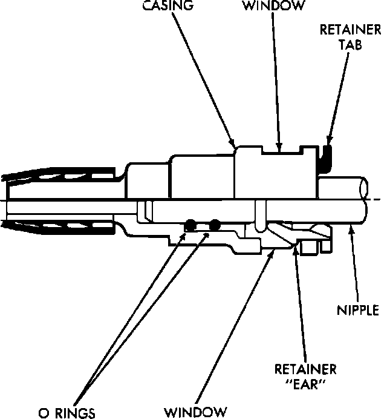
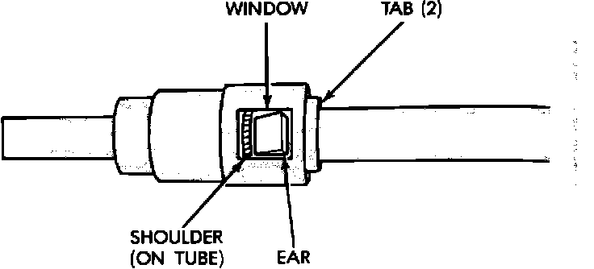

Two TAB Type Fittings
NOTE: Fuel injection quick connect fittings are not serviced separately. Do not attempt to repair damaged quick connect fittings or tubes. Replace complete fuel tube/quick connect fitting assembly.Fuel Line Quick Connect Fitting:

REMOVAL
1. Disconnect negative battery cable.
2. Perform fuel pressure release procedure.
3. Squeeze retainer tabs together and pull quick connect fitting off fuel tube nipple. The retainer will remain on fuel tube.
INSTALLATION
1. Using a clean lint free cloth, clean fuel tube nipple and retainer.
2. Using a clean motor oil, lightly lube nipple and retainer.
CAUTION: Never install quick connect fitting if retainer is damaged or missing.
Fuel Line Quick Connect Fitting:

3. Push fitting over fuel tube until retainer seats and a click is heard. When the fitting is properly locked retainer ears will be visible in the windows.
4. Verify connection by pulling on the fuel tube. If fitting locks in place connection is secure.
5. Using the DRB II select the Automatic Shut Down (ASD) Fuel System Test to pressurize fuel system and check for leaks.
CAUTION: Unless the test is stopped or the ignition switch is turned to the OFF position the fuel pump relay and the ASD relay will remain energized for 7 minutes by the ASD Fuel System Test.